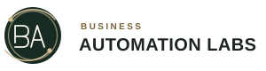
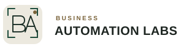

01 · Connected systems
Connected Monogram
A precise BA mark with a gold connector, paired with a clear sans-serif wordmark. Suggests conversations and services joined into one customer path.
Current site logoIdentity study · 3 directions
Each vector option brings the same forest-green, ivory, and restrained-gold palette to a different part of the work: connected automation, moving workflows, or a creative digital canvas. Hover a concept for a restrained motion cue.
A precise BA mark with a gold connector, paired with a clear sans-serif wordmark. Suggests conversations and services joined into one customer path.
Current site logo
A circular path and two connection points suggest an ongoing workflow while keeping the same studio wordmark.

An open frame surrounds the monogram, drawing on the edges of a design canvas and the panels of a website layout.